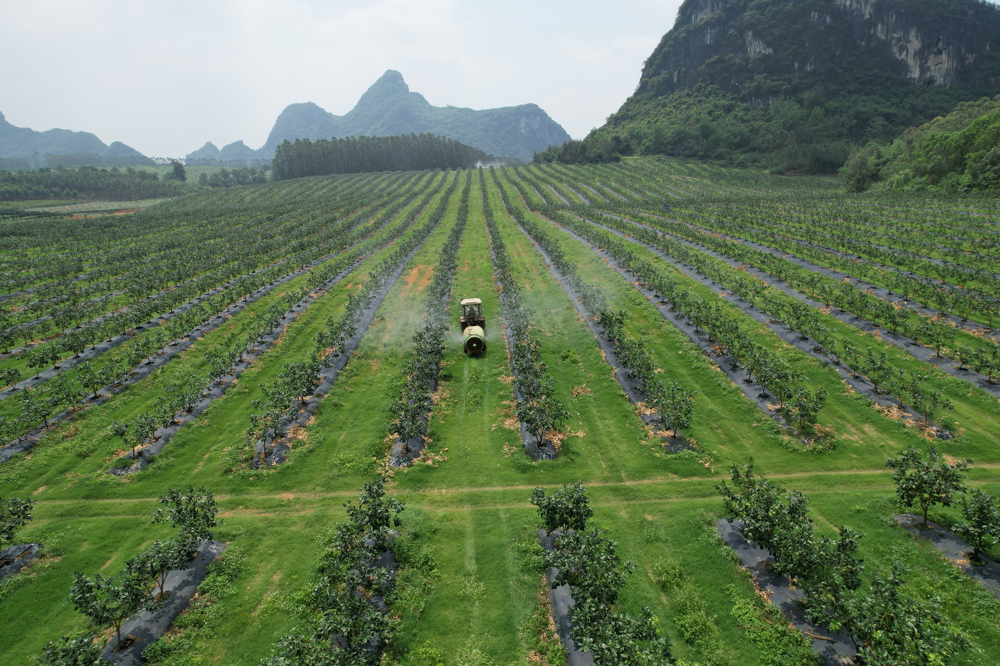
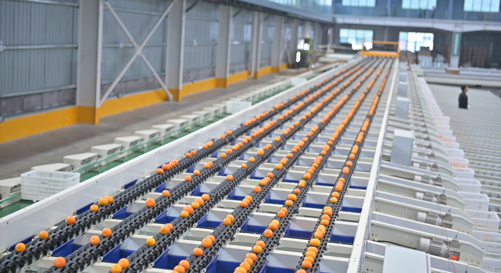
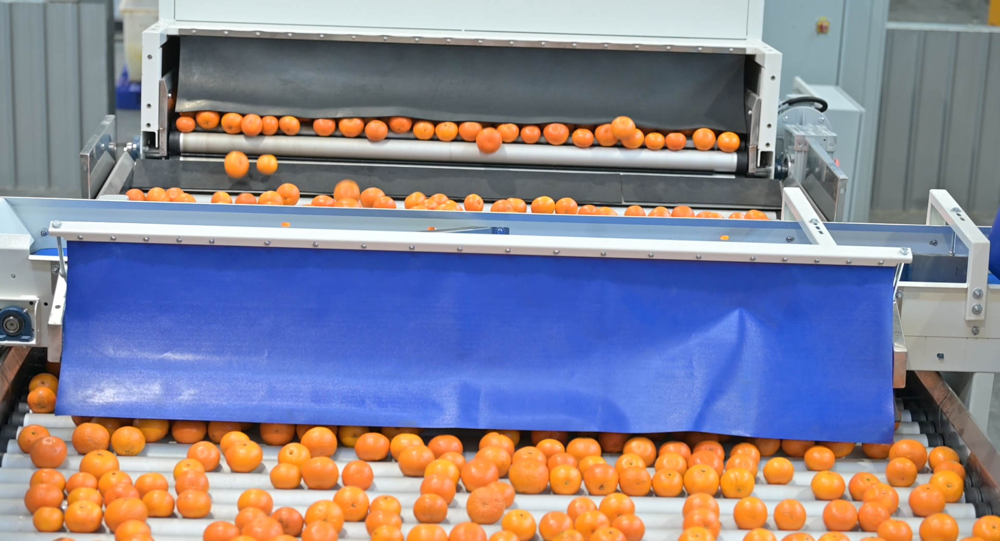
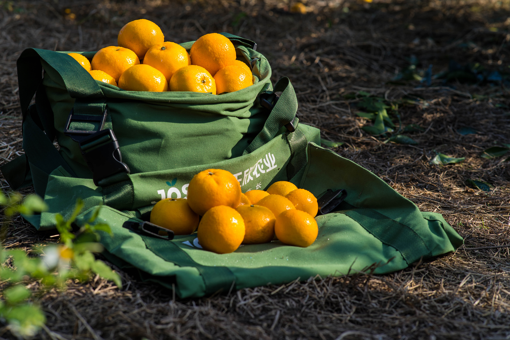
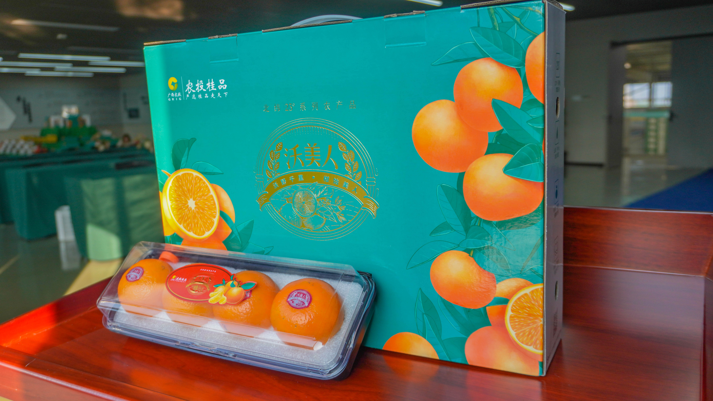
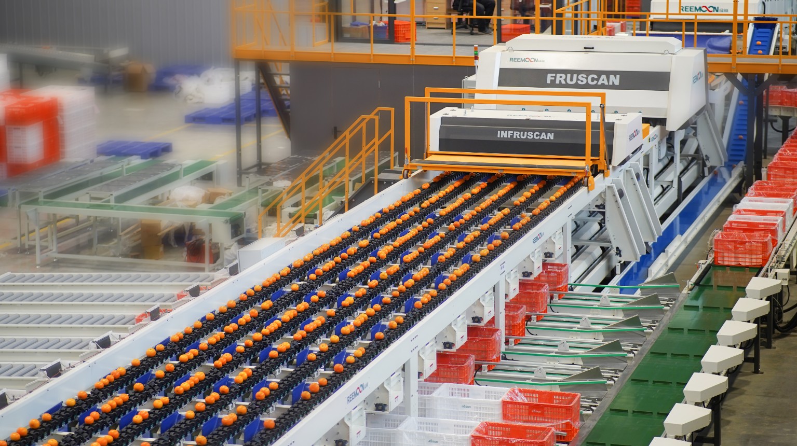

南宁市正欣农业开发有限公司成立于2020年4月，以"科技赋能·智慧发展"为经营理念，致力于打造具有广西优势的农业科技品牌。公司已建成3000亩高标准现代柑橘产业园区、13,000m²农产品数字化产地仓，创立自有品牌"正欣农业 / Josun"，累计投资超1亿元。
公司业务覆盖果树育苗、现代化种植、品牌农产品生产加工、大型仓储物流、生鲜销售全产业链，已初步形成产销一体化供应链体系。公司以市场为导向，利用3-5年时间，布局建成万亩现代化种植基地、20个数字化产地仓，目标年销售规模30-50亿元。
Nanning Zhengxin Agricultural Development Co., Ltd. was established in April 2020. Guided by the business philosophy of "Empowering with Technology, Developing with Wisdom", the company is committed to creating an agricultural technology brand with Guangxi's advantages. The company has built a 3,000-mu high-standard modern citrus industrial park and a 13,000-square-meter digital agricultural product origin warehouse, and founded its own brand "Josun Agriculture", with a cumulative investment of over 100 million RMB.
The company's business covers the entire industrial chain of fruit tree seedling cultivation, modern planting, production and processing of branded agricultural products, large-scale warehousing and logistics, and fresh fruits sales, and has initially formed an integrated supply chain system for production and sales. Market-oriented, the company plans to build a 10,000-mu modern planting base and 20 digital origin warehouses within 3-5 years, with the goal of achieving an annual sales scale of 3-5 billion RMB.






3,000亩智慧果园 | 以色列滴灌精准种植 | 13,000m² 数字化产地仓 | 全自动分级分拣 | 糖度13-18°Sugar degree | 冷柜保质45-60天 | 供应期11月-4月
广西农业产业化重点龙头企业
Key Leading Enterprises of the Autonomous Region
出境水果果园 + 包装厂双认证
Dual Certification for Fruit Orchards and Packaging Plants
ISO9001 质量管理
ISO9001 Quality Management
ISO22000 食品安全管理
ISO22000 Food Safety Management
绿色食品认证
Green Food Certification
香港优质"正"印认证
Hong Kong Q-Mark Certification
粤港澳大湾区品质认证
Guangdong-Hong Kong-Macao Greater Bay Area Quality Certification
| 供应季节 / Supply Season | 每年11月 — 次年4月（高峰12月-3月） | Nov – Apr (peak Dec–Mar) |
| 产地仓产能 / Production Capacity | 年加工 20,000-25,000 吨沃柑 | 20,000–25,000 tons / year |
| 加工产线 / Processing Production Line | 清洗 → 杀菌 → 分级（6级）→ 包装，全自动化 | Wash → Sanitize → Grade (6 tiers) → Pack (fully automated) |
| 最小起订 | 1 × 40尺冷藏柜（约24吨 / 2,400箱10kg） | 1 × 40ft reefer (~24t / 2,400 ctns 10kg) |
| 冷柜温度 | 2-4℃ 全程冷链 | 2–4°C cold chain throughout |
| 装货港口 | 广西防城港 / 钦州港（或深圳港） | Fangchenggang / Qinzhou / Shenzhen |
| 目的港口 | 中东 Jebel Ali / Dammam · 东南亚 Singapore / Port Klang · 欧洲 Rotterdam | Middle East · Southeast Asia · Europe |
| 海运时效 | 中东 15-18天 · 东南亚 5-7天 · 欧洲 25-30天 | ME 15–18d · SEA 5–7d · EU 25–30d |
| 付款方式 | T/T 30%定金 + 70%见提单副本 / L/C即期 | T/T 30% deposit + 70% against B/L copy / L/C at sight |
| 证书文件 | 原产地证(Form E) · 植物检疫证书 · 装箱单 · 发票 · 出境水果双证 | CO (Form E) · Phyto · Packing List · Invoice · Export Orchard & Packing Cert |
欢迎全球超市采购、食品进口商、批发商联系合作。可寄样品，可预约果园及产地仓考察。
南宁市正欣农业开发有限公司 | Nanning Zhengxin Agriculture Development Co., Ltd.
品牌：正欣农业 / Josun | 广西南宁武鸣区